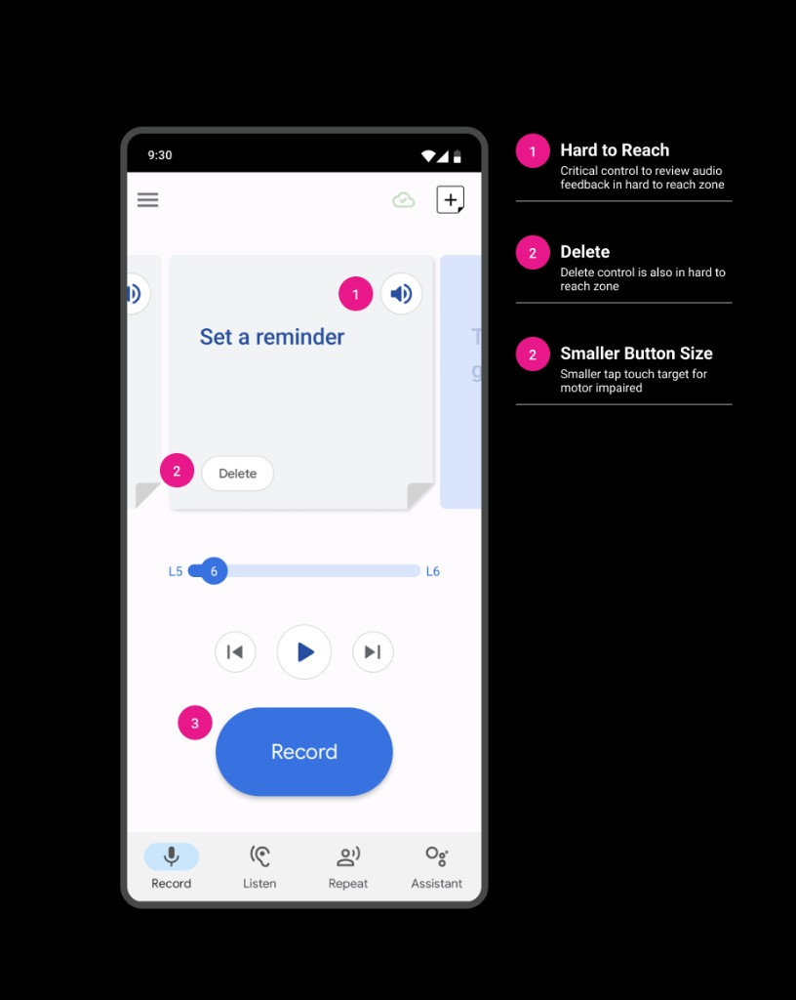
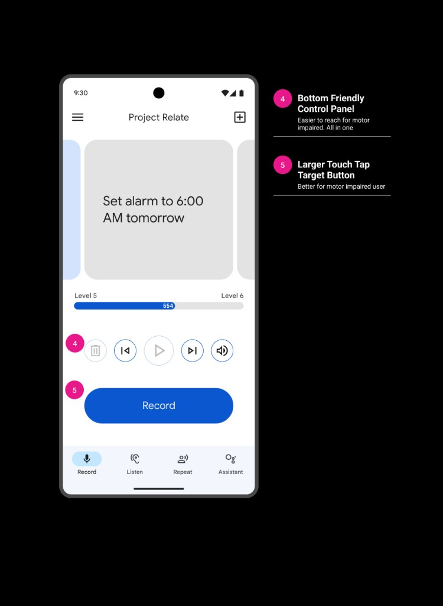

01 — About the app
What is Project Relate?
Project Relate is a machine-learning app that helps people with atypical speech communicate independently, including with Google Assistant.
02 — Problem
An eng-driven app without visual cohesion
Relate lacked dedicated UI support. The interface felt outdated and unlike a modern Android app, with weak recognition, inconsistent visuals, and an accessibility product that wasn’t meeting the needs of its motor impaired user.
- Optimize the recording experience to cut down mobile user effort for motor-impaired users
03 — Pain points
Users couldn’t read the interface
Users struggled to understand buttons and icons because of size, placement, and unclear function.
PROJECT_RELATE // USER_FEEDBACK.LOG
SEV: HIGH · 04 ENTRIES
Problems
> unresolved · awaiting triage
ERR_01 / REACH
— □ ×
“Some of the controls are just out of reach. I can’t stretch my thumb that far.”
ERR_02 / RECOGNITION
— □ ×
“All the feature pages look the same, I can’t tell what any of them actually do until I tap in and find out.”
ERR_03 / TOUCH TARGETS
— □ ×
“Little icons are terrible. All buttons need to be bigger.”
Ignore
Solve
ERR_04 / FATIGUE
— □ ×
“There’s so much to record, my hand gives out before I’m even halfway done.”
04 — Approach
How we addressed the pain points
- Migrate to the current Google design system
- Create customized components for accessibility needs
The solution: adopt Material 3 for a cohesive Android look and feel, then create custom sizes so the system stayed accessible for motor, cognitive, and low-vision users.
PROJECT_RELATE // ERGONOMIC_MAP
RIGHT HAND · SINGLE GRIP
Reach is not optional
> move critical controls into the thumb zone
Dead zone
buttons live here today → move them
Reachable
Strain / stretch
01 / Grip
Optimize one-hand usage
02 / Targets
Larger buttons, bigger tap targets
03 / Reach
Relocate buttons into the thumb zone
04 / Clarity
Improve feature recognizability
05 — System shift
Material 2 → Material 3
Moving from Material 2 to Material 3 brought Relate in line with modern Android patterns while keeping room to customize for the audience.
PROJECT_RELATE // SYSTEM_SHIFT
M2 → M3
Before / after
> same screen · new system
BEFORE / MATERIAL 2
— □ ×

→
AFTER / MATERIAL 3
— □ ×

06 — Components
Custom components for real users
Default Android buttons weren’t sized for this audience. Relate components were enlarged and retuned so primary actions were easier to hit and understand.
07 — Cognitive users
Better understanding for cognitive users
Listen, Repeat, and Assistant all looked the same, so users with cognitive impairments couldn’t tell what any destination did until they tapped in. Distinct illustrations and a clear purpose on each screen made the features recognizable at a glance.
08 — Results
Larger targets, fewer missed taps
Relocating controls into the thumb zone and enlarging tap targets made primary actions easier to hit for motor-impaired users.
METRIC_01 // TAP_ACCURACY_RATE
POST-REDESIGN
Delta
Tap accuracy climbed from 68% to 94%.
Before
68%
32% mis-tap rate
“I keep missing them”
After
94%
6% mis-tap rate
larger targets, thumb reach
09 — Impact
Unblocking marketing and new markets
A familiar Android interface made scaling easier, including expansion efforts tied to Ghana. Featured in Google I/O’s Accessibility segment (May 2024). Collaboration with a brand studio produced a new tutorial video that used the refreshed system to improve onboarding and overall usability.
10 — Next & lessons
What follows
Next steps
- Use testing and surveys to refine based on feedback
- Keep collaborating on marketing strategies
Lessons learned
- Prioritize product audits to strengthen brand alignment
- Integrate established design-system guidelines early
- Build inclusive practices in for underrepresented user groups